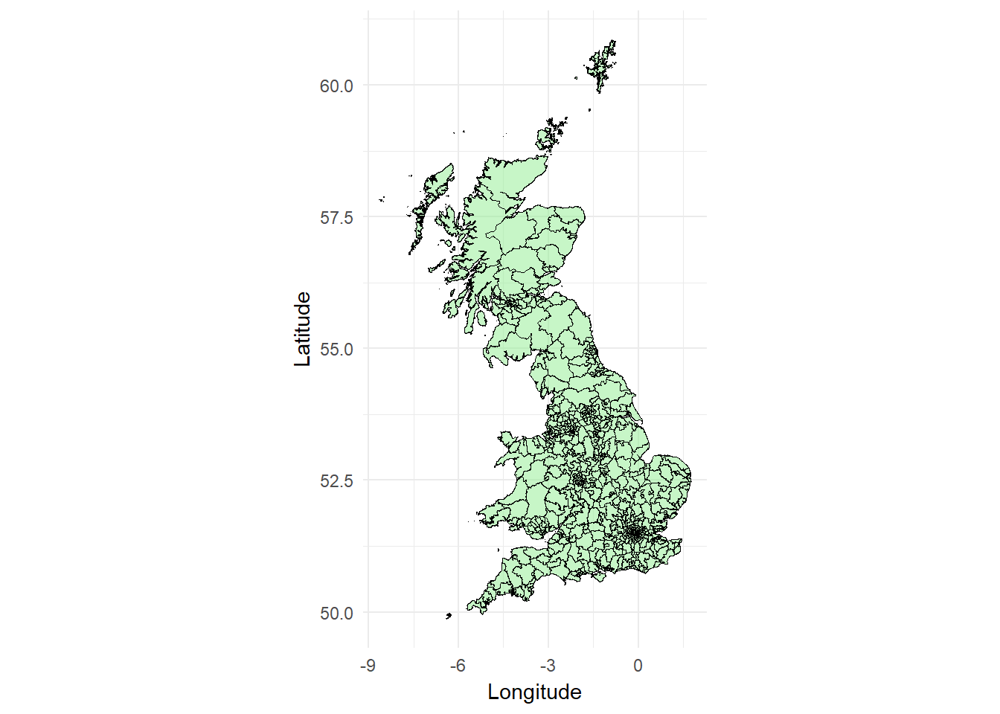
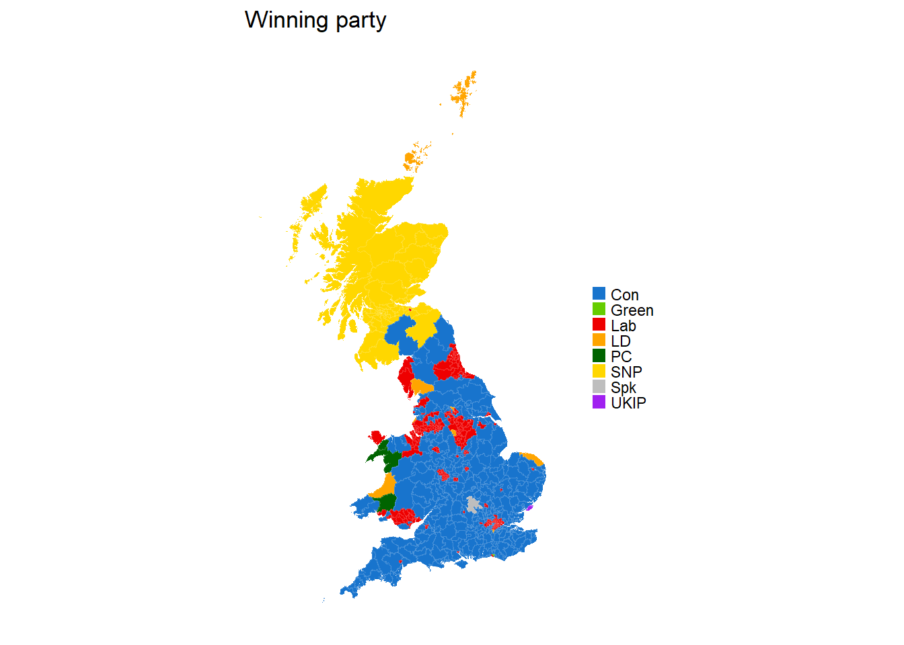
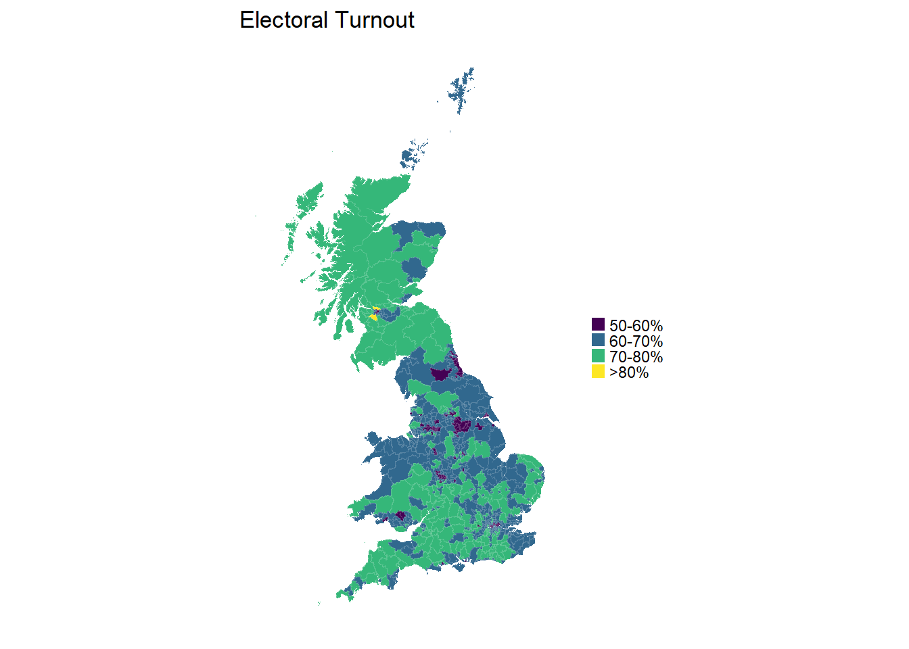
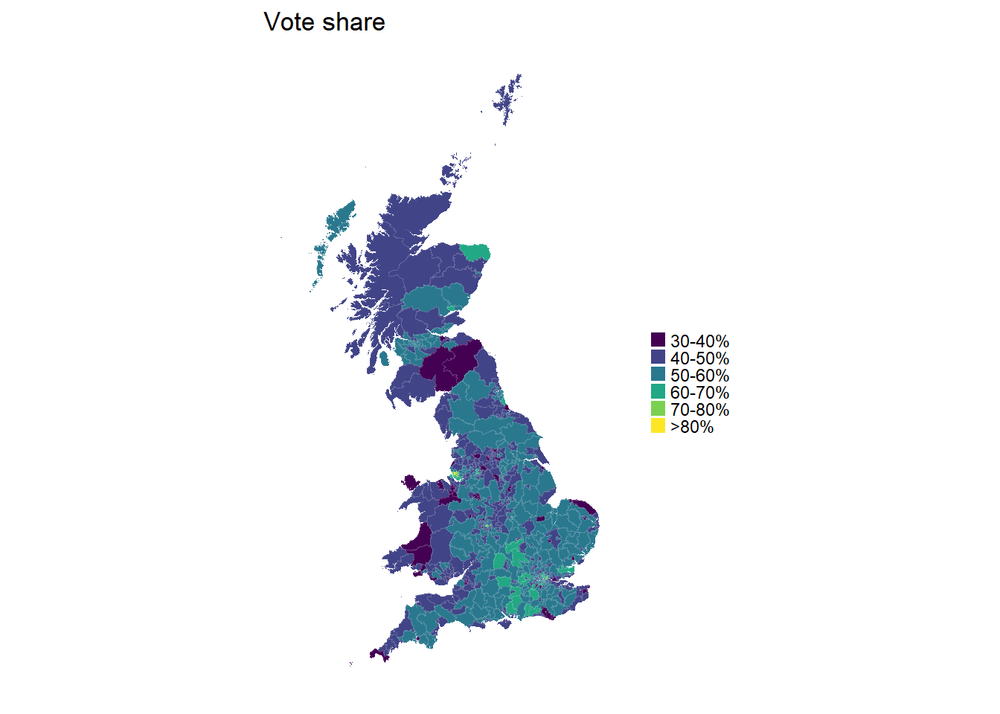
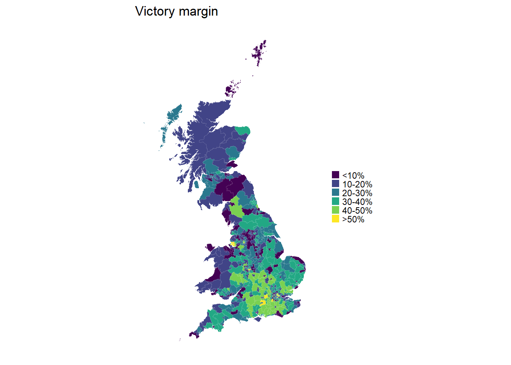
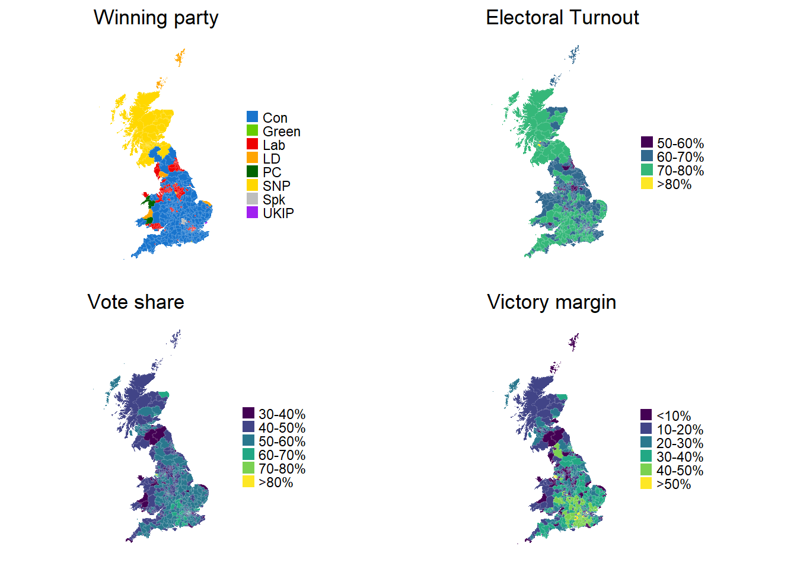

Occassionally I do something other than playing with EEG data. R can also handle a lot of spatial data - in other words, you can create nice maps. There’s the small matter of an election coming up next month which is probably our last chance of avoiding a disastrous Brexit.
I decided to try out some of R’s mapping functions and packages to see if I could come up with any useful graphics of the sort you usually see: maps showing turn-out, who won each constituency, things like that.
The first step was to download a shapefile with parliamentary constituency boundaries. A shapefile is a popular vector format used in geographic information system (GIS) software. The Office of National Statistics’ Geoportal provides many such maps for free. I downloaded the “Generalized Clipped Boundaries” map of Great Britain 1 - sorry Northern Ireland, I’d have to get a separate shapefile for you and it’s beyond my ability to combine them right now! I loaded it using the rgdal package. Essentially, the shapefile provides a set of polygons, each for a single constituency.
## OGR data source with driver: ESRI Shapefile
## Source: "C:\Users\Matt\Downloads\Westminster_Parliamentary_Constituencies_December_2015_Generalised_Clipped_Boundaries_in_Great_Britain", layer: "Westminster_Parliamentary_Constituencies_December_2015_Generalised_Clipped_Boundaries_in_Great_Britain"
## with 632 features
## It has 5 fields
## Integer64 fields read as strings: objectidFirst up I checked I’d loaded the map in and could plot it at all. Because I like to use ggplot, I converted the shapefile to a tibble using the broom package’s tidy function. The shapefile has several accessible “regions” which give identifiers for individual polygons. In this case, these are “objectid” (not very useful, simply a number from 1 to 632), “pcon15cd” (a factor with unique identifier for each constituency - very useful), and “pcon15nm” (a factor with the name of each constituency - quite useful). For this I’lll use “pcon15cd”, the unique identifier. It turns out the constituency names can differ slighltly across different datasets, while the unique identifier is always identical.
gb_tidy <- tidy(gb_map, region = "pcon15cd")
ggplot() +
geom_polygon(data = gb_tidy,
aes(x = long, y = lat, group = group),
color = "black", fill = 'light green', size = .2, alpha = 0.5) +
theme_minimal() +
labs(x = "Longitude", y = "Latitude")+
coord_quickmap()
Next I downloaded the 2015 election results from the Electoral Commission2. These are available under the Open Government Licence v2.0. The results I’m interested in are actually spread across two different files. One contains the vote breakdown for every constituency - thus, the names of candidate, every party, and how many votes they received. The other contains, amongst other things, the total number of votes cast and the size of the electorate for each constituency.
Let’s make some some maps!
First, I’ll load the two files and do a little wrangling. From one file I take the valid vote and electorate counts for each constituency and calculate turnout i.e. the percentage of votes cast out of the maximum possible. I join the two files together based on the Constituency ID number, then select only the columns I’m really interested in - constituency name, constituency ID, party abbreviation, vote share (%), and turnout, and filter out Northern Ireland, for which I don’t currently have a shapefile.
Let’s create a map showing which party won each constituency. First I’ll define a colour palette that covers the winning parties, all using their usual acronym. “Spk” is for the Speaker of the House of Commons, who is, officially, neutral. Then I extract the winner of each constituency. Since the file is already arranged such that the votes are in descending order within in each constituency, I simply take the first row from each using slice.
party_palette <- c("Con" = "dodgerblue3", "Lab" = "red2", "LD" = "orange",
"SNP" = "gold", "Green" = "chartreuse3", "PC" = "darkgreen",
"UKIP" = "purple", "Spk" = "grey")
winner <- group_by(results_2015, `Constituency ID`) %>%
slice(1) %>%
ungroup() %>%
right_join(., gb_tidy, by = c("Constituency ID" = "id"))
colour_by_winner <- ggplot(data = winner,
aes(x = long, y = lat, group = group)) +
geom_polygon(aes(fill = `Party abbreviation`),
color = NA) +
geom_path(colour = "white", size = 0.01, alpha = 0.1) +
theme_minimal() +
scale_fill_manual(values = party_palette, na.value = "slategrey") +
theme(panel.grid = element_blank(),
axis.title = element_blank(),
axis.ticks = element_blank(),
axis.text = element_blank()) +
coord_quickmap()+
guides(fill = guide_legend("", keywidth = 0.6, keyheight = 0.6)) +
ggtitle("Winning party")
colour_by_winner
Now we want to have some other maps to compare it to. Let’s start with a map that shows turnout (i.e. the percentage of votes cast of the maximum possible). We’ll cut turnout into bins. The minimum turnout in a constituency was around 51%. This is a little higher than I’ve seen reported elsewhere, but these figures come directly from the Electoral Commission. I create a discrete scale using cut.
winner$turnout_bin <- cut(winner$turnout, breaks = c(0, 0.5, 0.6, 0.7, 0.8, 1),
labels = c("<50%", "50-60%", "60-70%", "70-80%", ">80%"))
colour_by_turnout <- ggplot(data = winner,
aes(x = long, y = lat, group = group)) +
geom_polygon(aes(fill = turnout_bin),
color = NA) +
geom_path(colour = "white", size = 0.01, alpha = 0.1) +
theme_minimal() +
scale_fill_viridis(discrete = TRUE)+
theme(panel.grid = element_blank(),
axis.title = element_blank(),
axis.ticks = element_blank(),
axis.text = element_blank()) +
guides(fill = guide_legend("", keywidth = 0.6, keyheight = 0.6)) +
ggtitle("Electoral Turnout") +
coord_quickmap()
colour_by_turnout
Next up we’ll create a map for the share of the vote achieved by the winner. Again, we’ll create a discrete scale from the continuous measure that is the share of the vote, to aid visualization.
winner$share_bin <- cut(winner$`Share (%)`, breaks = c(0, 30, 40, 50, 60, 70, 80, 100),
labels = c("<30%", "30-40%", "40-50%", "50-60%", "60-70%", "70-80%", ">80%"))
colour_by_share <- ggplot(data = winner, aes(x = long, y = lat, group = group)) +
geom_polygon(aes(fill = share_bin),
color = NA)+
geom_path(colour = "white", size = 0.01, alpha = 0.1) +
scale_fill_viridis(discrete = TRUE) +
theme_minimal() +
theme(panel.grid = element_blank(),
axis.title = element_blank(),
axis.ticks = element_blank(),
axis.text = element_blank()) +
guides(fill = guide_legend("", keywidth = 0.6, keyheight = 0.6)) +
ggtitle("Vote share")+
coord_quickmap()
colour_by_share 
Perhaps more interesting than overall vote share is how big a margin there is between the winner and the runner-up. For this we’ll need to slice our data up slightly differently. Instead of taking just the first row from each constituency, I take the first two rows. I then calculate the difference between the share of the vote for the winner and the runner-up using the very hand lead function from dplyr, which lets me offset values by other values an arbitrary number of rows away. I then chuck out the second row, so all I have is the winner. Finally, I’ll discretize the scale again and create one last map.
winner_lead <- results_2015 %>%
select(`Constituency Name`, `Constituency ID`, `Party abbreviation`, `Share (%)`) %>%
group_by(`Constituency ID`) %>%
slice(1:2) %>%
mutate(Margin = `Share (%)` - lead(`Share (%)`, default = first(`Share (%)`))) %>%
slice(1) %>%
ungroup() %>%
select(`Constituency ID`, Margin) %>%
left_join(gb_tidy, by = c("Constituency ID" = "id"))
winner_lead$Margin_bin <- cut(winner_lead$Margin,
breaks = c(0, 10, 20, 30, 40, 50, 100),
labels = c("<10%", "10-20%", "20-30%",
"30-40%", "40-50%", ">50%"))
colour_by_lead <- ggplot(data = winner_lead, aes(x = long, y = lat, group = group))+
geom_polygon(aes(fill = Margin_bin), color = NA) +
geom_path(colour = "white", size = 0.01, alpha = 0.1) +
scale_fill_viridis(discrete=TRUE) +
theme_minimal()+
theme(panel.grid = element_blank(),
axis.title = element_blank(),
axis.ticks = element_blank(),
axis.text = element_blank()) +
guides(fill = guide_legend(title = "", keywidth = 0.6, keyheight = 0.6)) +
ggtitle("Victory margin")+
coord_quickmap()
colour_by_lead 
Now to finish off, let’s place them all side-by-side.
grid.arrange(colour_by_winner, colour_by_turnout, colour_by_share,
colour_by_lead, nrow = 2)
What I’d like to do next is make these plots interactive, so that you can, for example, hover over each constituency and retrieve vote share, turnout etc. Two options for doing that are the packages plotly, which can turn any ggplot into an interactive plot trivially, and leaflet, which is specifically intended for producing interactive maps. I’ll be trying that out soon.